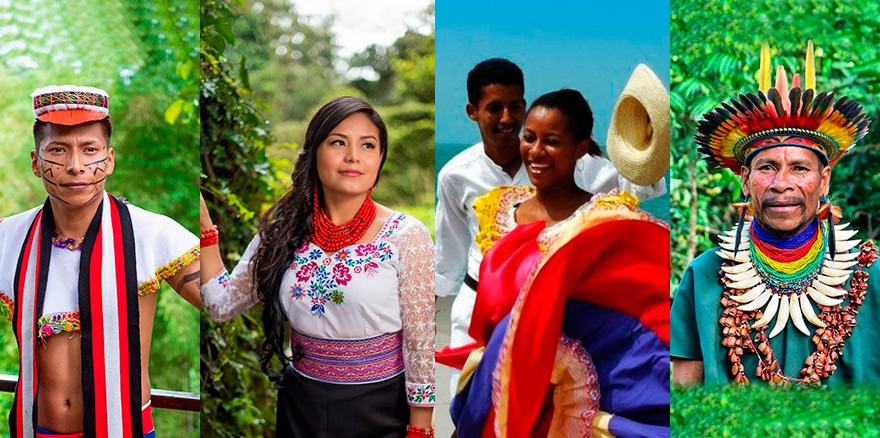
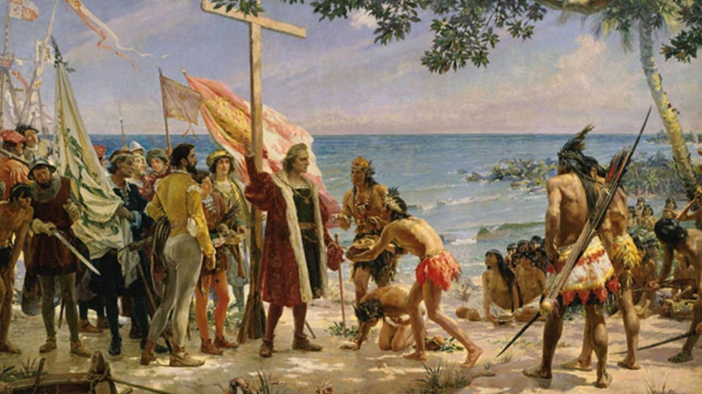
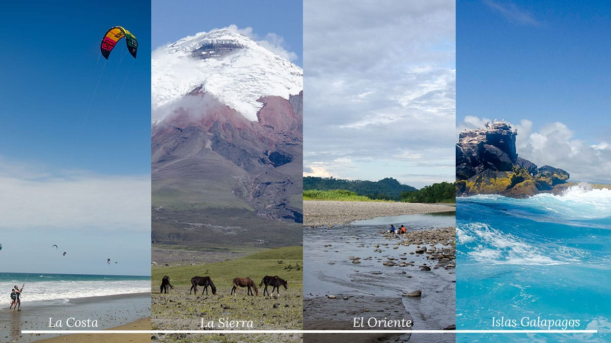

HISTORIA
La comida tradicional ecuatoriana es un reflejo de la diversidad geográfica, cultural y étnica del país. Ecuador está compuesto por diferentes regiones —la Costa, la Sierra, la Amazonía y la Región Insular (Galápagos)— y cada una de ellas tiene su propia riqueza culinaria. La historia de la comida ecuatoriana es una mezcla de tradiciones indígenas, influencias africanas, españolas y, en menor medida, asiáticas, que se han fusionado a lo largo de los siglos.
Orígenes Indígenas Muchos de los ingredientes y técnicas de cocina de la comida tradicional ecuatoriana provienen de las culturas indígenas que habitaron el territorio mucho antes de la llegada de los españoles. Los pueblos Shuar, Kichwa, Huaorani, Otavaleños, entre otros, cultivaban y usaban productos como la papa, el maíz, la yuca, el ají, la quinua y el cacao. La papa, por ejemplo, es originaria de los Andes y ha sido un alimento clave en la dieta de la región andina desde hace más de 7,000 años. La técnica de cocinar con hojas (como el maito o el ayampaco) es otra herencia indígena, así como el uso de ingredientes autóctonos como el chontaduro, la guayusa y el cacao. Además, muchos de los platillos ecuatorianos tienen significados ceremoniales, como la fanesca, un plato asociado con la Semana Santa que se originó en la combinación de prácticas indígenas y la tradición católica. |
 |
|---|---|
 |
Influencia Española La llegada de los conquistadores españoles a Ecuador en el siglo XVI marcó un hito en la evolución de la cocina ecuatoriana. Los españoles introdujeron ingredientes como la carne de cerdo, vaca, pollo y la cebolla, así como técnicas de cocina europeas. A su vez, los indígenas adaptaron estos ingredientes a sus formas de preparación tradicionales. Uno de los ejemplos más claros de esta fusión es el hornado, un platillo de cerdo asado que se ha mantenido en la región Sierra. La mezcla de granos (introducidos por los españoles) y tubérculos (como la papa y la yuca) dio lugar a sopas y guisos como el locro de papa y la fritada. También, la panadería se enriqueció con la incorporación de técnicas de horneado traídas por los españoles. |
Gastronomía Regional
|
 |
La comida tradicional ecuatoriana es un reflejo de la historia del país: un crisol de culturas, donde las tradiciones indígenas, españolas y africanas se han fusionado para crear una de las gastronomías más diversas y sabrosas de América Latina. Los ingredientes nativos como la papa, la yuca, el maíz y el cacao, junto con las influencias coloniales y la diversidad de las regiones del país, hacen de la comida ecuatoriana una experiencia única.